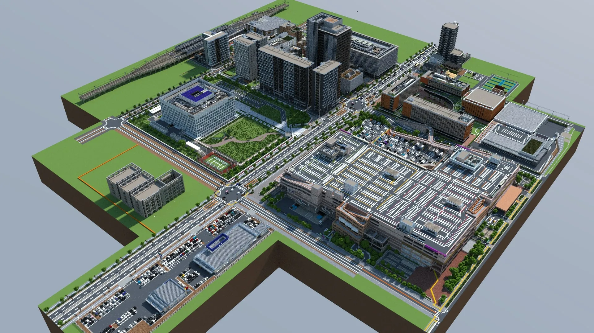

おばさんずと申します。ゲームしか取り柄のない人です。
WiiU版が発売された2015年の12月からMinecraftの沼にはまり続けています。
中でも現代建築が好きで、よく見るビルや家、商業施設などを好んで作っています。

自都市です
このwebサイトでは、マイクラで今まで作ったあれこれをまとめています。コード直書きなのでスローペースですが、気分で更新しているのでたまに覗きに来ていただけると嬉しいです。
リンク集
|
主な居場所です |
|
|---|---|
|
YouTube 醜態晒しています |
YouTube |
|
Github 使いこなせてないです |
Github |
|
Design System デザインシステム |
準備中 |
|
Old Website かつてのウェブサイト |
かつてのサイト |